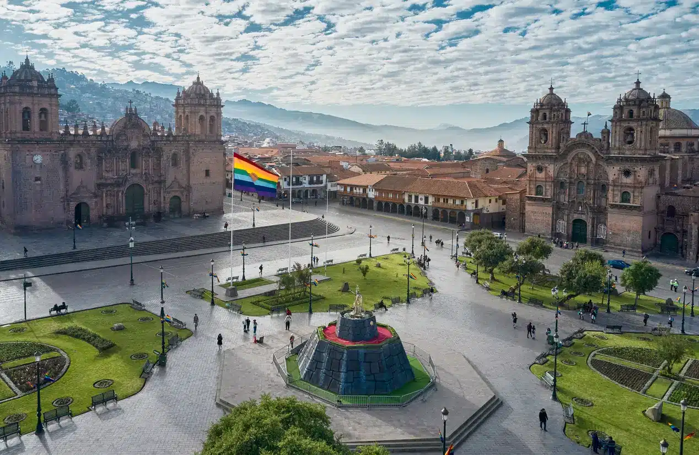

Cusco is one of my favorite cities in Peru. It is famous for its beautiful mountains, historic buildings, and rich Inca culture.
I love Cusco because it has wonderful landscapes, delicious traditional food, and many interesting places to visit.
